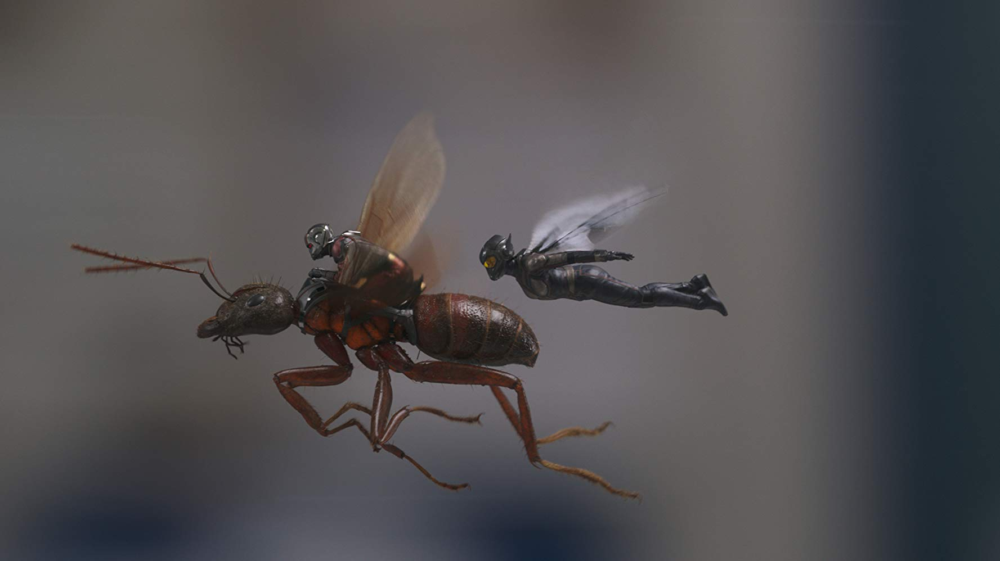

Phim Hay Tháng 07.2018: Những Phần Tiếp Theo Được Mong Chờ Nhất Mùa Hè
Avengers: Infinity War vừa cán mốc 2 tỷ $ trên toàn thế giới thì một siêu phẩm MCU cũng rục rịch đánh chiếm phòng vé toàn cầu. Đó chính là phần sau bom tấn hơn 500 triệu $ Ant-Man - Ant-Man & The Wasp.
Sau khi giúp Captain America giải cứu Winter Soldier, Người Kiến buộc phải chịu chính phủ quản thúc. Thế nhưng, gã siêu anh hùng Scott Lang làm sao chịu ở yên? Nhiều biến cố liên tục xảy ra, khiến Scott rơi vào tình huống ngặt nghèo chưa từng có. Chẳng những thế, anh còn làm liên lụy đến tiến sĩ Hank Pym và cô con gái Hope van Dyne phải chạy trốn theo.

Kết nối trực tiếp cùng Avengers: Infinity War, Ant-Man & The Wasp là phần phim hết sức quan trọng đối với MCU. Chắc chắn rằng, bất cứ ai đang yêu mến vũ trụ điện ảnh Marvel sẽ không thể bỏ qua bộ phim hay này.
Sau khi cứu thế giới khỏi thảm họa thú khổng lồ với Rampage, Dwayne Johnson/ The Rock trở lại màn ảnh bằng Skyscrapper và vẫn dưới dạng vai quen thuộc – người hùng.
Tuy nhiên, lần này có sự khác biệt lớn. Nhân vật Will Sawyer là cựu chiến binh mất đi một chân. Đây sẽ là thử thách khó khăn cho The Rock. Nếu thành công, đây sẽ là bước đột phá lớn trong sự nghiệp của anh.
Trong một lần thực hiện nhiệm vụ nguy hiểm, đội trưởng đội đặc nhiệm Will Sawyer đã gặp phải sự cố thảm khốc. Anh bị mất chân trái và buộc phải nghỉ hưu. May mắn thay, tai nạn giúp anh gặp được người vợ dịu dàng… Sau nhiều năm, Will có gia đình yên ấm cùng hai cô con gái xinh xắn và công việc chuyên gia tư vấn an ninh cho những tòa nhà cao tầng.
Ngày nọ, anh được mời đến Hongkong để thiết lập hệ thống bảo vệ tòa nhà có độ cao khủng khiếp -240 tầng. Cả gia đình anh cũng dọn đến đây. Những tưởng tòa nhà bất khả xâm phạm nhưng không, thảm họa do con người cố ý tạo ra đã đẩy những con người bên trong tòa nhà vào tình thế ngàn cân treo sợi tóc. Vợ con bị mắc kẹt giữa tòa nhà đang cháy, chàng cựu đặc vụ thương tật đầy mình có cứu được họ?
Năm 2013, ông vua hành động Sylvester Stallone gây sốt khi trở lại bằng bộ phim hành động Escape Plan.
Ngoài nội dung mới lạ về hành trình vượt ngục khỏi nhà tù bất khả xâm phạm, Escape Plan còn sở hữu nhiều tình tiết gay cấn, hấp dẫn và sự tham gia của Stallone cùng Arnold Schwarzenegge. Phim đã thu được hơn 137 triệu $ toàn cầu.
Sau khi đào thoát khỏi ngục giam trên biển The Tomb, Ray Breslin cũng chẳng sống yên bình vui vẻ được bao lâu. Kẻ thù ngày xưa nay đã quay trở lại và lợi hại hơn gấp ngàn lần.
Ray và các đồng đội sẽ bị đưa đến Hades – nhà tù tuyệt mật chuyên giam giữ bọn tội phạm nguy hiểm nhất thế giới. Tù nhân bị cai quản nghiêm ngặt bởi hệ thống điện tử hiện đại cùng những robot cai ngục công nghệ cao. Không bản vẽ, không kế hoạch, đào thoát khỏi pháo đài Hades – Địa Ngục thật sự là điệp vụ bất khả thi.
Ngoài Sylvester Stallone, phim còn có sự tham gia của “Drax” – Dave Bautista và ảnh đế điện ảnh Trung Quốc – Huỳnh Hiểu Minh. Escape Plan 2: Hades hứa hẹn sẽ lần nữa phá đảo phòng vé!
Gia đình ma cà rồng từng phá đảo 831 triệu $ trên toàn thế giới sẽ lại càn quét các rạp chiếu phim toàn thế giới vào mùa hè năm nay.
Sau khi yên bề gia thất với người chồng hiền lành và đứa con tinh nghịch, Mavis bắt đầu nghĩ tới người cha cô đơn. Cô sắp xếp một chuyến đi chơi bằng du thuyền cho cha và các bạn. Thế nhưng, con tàu lại ẩn chứa vô số bí mật có khả năng gây nguy hiểm chết người cho gia đình ma cà rồng.
Hotel Transylvania 3: Summer Vacation là phần thứ ba trong loạt phim hoạt hình ăn khách của hãng Sony. Tình tiết hấp dẫn cộng thêm hàng loạt thể loại ma vui nhộn, Hotel Transylvania sẽ tiếp tục là món quà hè dành cho các khán giả nhí sau quả bom tấn giữa tháng 6 – Incredibles 2.
Công chiếu tháng trước tại Thái Lan, bộ phim mới từ nhà sản xuất bom tấn học đường Bad Genius đã thu được những thành tích đáng nể. Ngay trong ngày đầu tiên, Brother Of The Year đã mang về doanh thụ 9,3 tỷ đồng. Sau 28 ngày công chiếu, phá vỡ kỷ lục thuộc về “đàn anh” Bad Genius tại thị trường trong nước với 81 tỷ đồng. Tính đến nay, đây là tác phẩm nội địa thành công nhất năm 2018 của xứ sở chùa vàng.
Tuy Brother Of The Year thuộc thể loại hài tình cảm nhưng phim không tập trung vào chuyện tình cảm mà đẩy mạnh yếu tố hài hước, khai thác mối quan hệ trái tính trái nết, chí chóe nhau suốt ngày như chó với mèo của anh em Chut và Jane.
Là anh trai nhưng Chut kém xa em mình về mọi mặt, học hành tệ, thể thao cũng tệ nốt. Đã vậy, cô em gái càng lớn lại càng giống mẹ, vừa hay càm ràm lại thích quản lý mọi thứ. Ngấm ngầm trả thù em gái, Chut âm thầm dùng “bản lĩnh anh trai” để đuổi hết mọi cậu chàng muốn tán tỉnh em mình. Để tránh xôi hỏng bỏng không như những lần trước, khi quen được anh chàng điển trai lai Nhật Moji, Jane dùng hết mọi cách để giấu anh mình.
Khi biết Jane và Moji đã hẹn hò nghiêm túc và tính chuyện kết hôn, ông anh trời đánh nào chịu để yên, phải hạ quyết tâm phá cho bằng được.
Brother Of The Year quy tụ dàn diễn viên thực lực. Nam chính Sunny Suwanmethanon là cái tên bảo chứng phòng vé với hàng loạt tác phẩm điện ảnh ăn khách. Nữ chính Yaya Urassaya được mệnh danh là Ngọc nữ làng phim Thái Lan này. Brother Of The Year đánh dấu lần đầu cô ra mắt trên màn ảnh rộng. Đặc biệt, phim có sự tham gia của Nichkhun, chàng idol nổi danh, thành viên nhóm nhạc Hàn Quốc 2PM. Sở hữu gương mặt đẹp trai cùng nụ cười tỏa nắng, anh chàng chắc chắn sẽ là vũ khí tối thượng đốn tim hàng loạt khán giả Việt Nam.